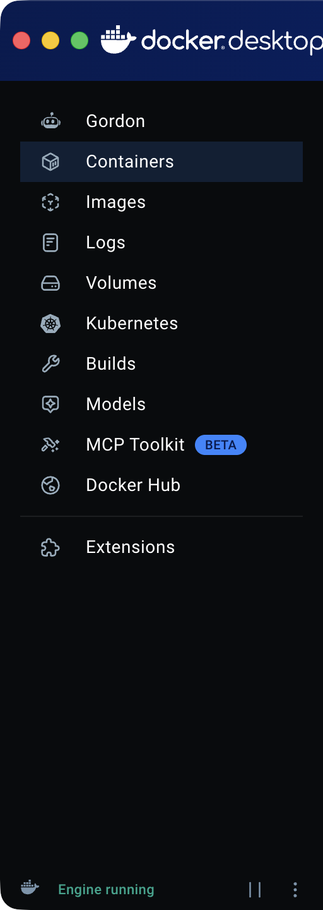
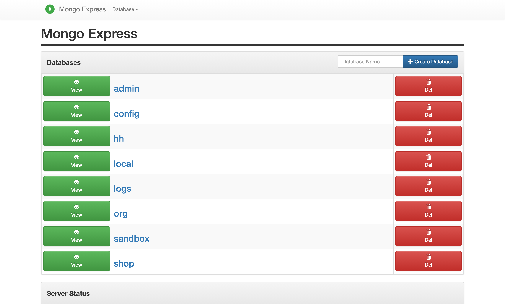
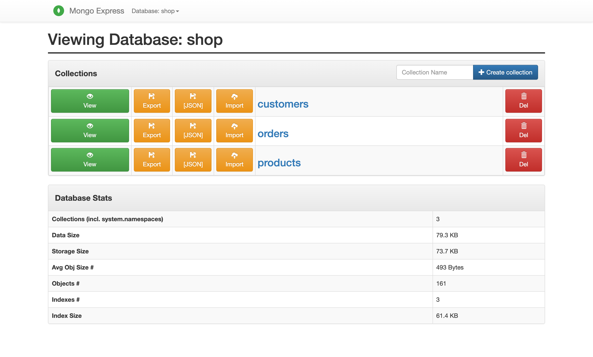
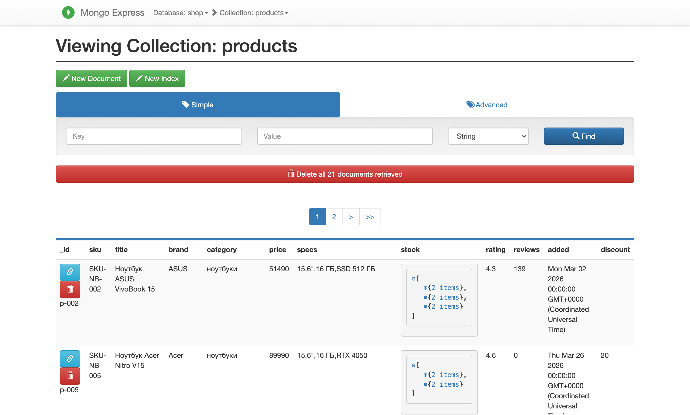
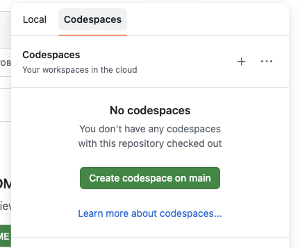

Справочник по MongoDB · модуль 1 · подключение и первые данные
Глава 1.1а
Стенд в Docker:
если Compass не подключается
На учебных компьютерах MongoDB Server и Compass ставятся не всегда: установщику нужны права администратора, служба сервера не запускается, а Compass при подключении пишет connect ECONNREFUSED. В этой главе — запасной путь. Сервер и учебные базы запускаются в Docker одной командой, данные открываются в браузере, а код работает в контейнере, где драйвер уже установлен. Если не ставится и Docker, тот же стенд поднимается в GitHub Codespaces.
- Категория
- Окружение и запуск
- Уровень
- Начальный
- Связанные темы
- 1.1 Сервер, база, коллекция · ПР-01 · КТ-01
- Зачем это знать
- Работать с курсом на любом компьютере, где есть Docker или хотя бы браузер
github.com/MaximBytecamp/mongodb-practice
§1Что именно не работает
Вспомним главу 1.1: Compass — клиент. Сам он данных не хранит, он подключается к серверу по адресу mongodb://localhost:27017. Поэтому сообщение при создании подключения говорит о сервере, а не о Compass:
connect ECONNREFUSED 127.0.0.1:27017
ECONNREFUSED — «в соединении отказано»: компьютер ответил, но порт 27017 никто не слушает. Так бывает в трёх случаях:
Во всех трёх случаях нужен сервер, который не устанавливается в систему. Это и есть контейнер: MongoDB запускается внутри Docker как отдельная программа со своей файловой системой, без службы Windows и без записи в реестр.
§2Какой путь выбрать
- свой ноутбук или домашний компьютер;
- Windows 10/11, macOS или Linux;
- установка один раз, дальше всё работает без интернета.
- на компьютере ничего нельзя установить;
- нужны браузер и аккаунт GitHub;
- бесплатно — около 60 часов работы в месяц.
Docker Desktop на Windows тоже ставится не везде. Ему нужны права администратора на установку, подсистема WSL 2 и включённая в BIOS виртуализация. Если в классе этого нет, сразу переходите к §10: Codespaces работает в браузере, и стенд там тот же — те же базы, те же команды проверки.
У MongoDB есть облачный сервис Atlas с бесплатным кластером, но из России он недоступен: в 2022 году компания прекратила обслуживать пользователей из России и Беларуси. Поэтому сервер в курсе всегда свой — на компьютере или в Codespaces.
§3Что будет запущено
В корне репозитория практик лежит файл compose.yaml. В нём описан весь стенд, и Docker поднимает его одной командой. Контейнеров несколько, у каждого одна задача:
localhost:8081
localhost:27017
docker composeиз папки репозитория
Docker · проект mongodb-practice · контейнеры запуска в сети сервера: для них он тоже localhost:27017
том mongo-data — данные сервера; переживает остановку и удаление контейнеров
Языки программирования на компьютер ставить не нужно. Python, Ruby, Go и компилятор C++ вместе с драйверами MongoDB лежат в образах: команда запуска поднимает нужный контейнер, выполняет в нём файл и удаляет контейнер. Папка репозитория видна внутри, поэтому код правится в обычном редакторе, а запускается в контейнере.
§4Шаг 1. Проверить Docker
Docker Desktop для Windows скачивается с docs.docker.com. Установщику нужны права администратора, а при первом запуске он включает подсистему WSL 2. После установки Docker Desktop нужно запустить: команды работают, только пока он открыт и внизу его окна написано Engine running.
Терминал на Windows — PowerShell: Win + X → «Терминал». Все команды главы набираются в нём. Проверьте две вещи:

Docker Desktop для Mac скачивается с docs.docker.com. Сборок две — для Apple Silicon и для Intel; какой у вас процессор, видно в меню → «Об этом Mac», строка «Чип» или «Процессор». После установки Docker Desktop нужно запустить из «Программ»: команды работают, пока он открыт и в его окне написано Engine running.
Терминал на macOS — приложение Терминал: Cmd + Пробел, набрать «Терминал». Проверьте две вещи:
На Linux Docker Desktop не нужен: ставится сам движок, Docker Engine, вместе с плагином Compose. Проще всего — официальным скриптом:
curl -fsSL https://get.docker.com -o get-docker.sh sudo sh get-docker.sh sudo usermod -aG docker $USER # чтобы запускать docker без sudo # затем выйдите из системы и войдите снова
Скрипт сам запускает службу Docker, и она стартует вместе с системой. Терминал в большинстве дистрибутивов открывается сочетанием Ctrl + Alt + T. Проверьте две вещи:
docker version # есть ли Docker и запущен ли он docker compose version # есть ли Compose
Client: Version: 29.7.2 API version: 1.55 Go version: go1.26.5 OS/Arch: darwin/arm64 Context: desktop-linux Server: Docker Desktop 4.89.0 (238018) Engine: Version: 29.7.2 API version: 1.55 (minimum version 1.40) OS/Arch: linux/arm64 … Docker Compose version v5.5.0
Главное здесь — что в ответе есть два блока: Client и Server. Клиент — это сама команда docker, сервер — движок внутри Docker Desktop. Если блока Server нет, а вместо него ошибка подключения, движок не запущен — как эта ошибка выглядит на вашей системе, показано в §12.
§5Шаг 2. Скачать репозиторий
Если установлен Git:
git clone https://github.com/MaximBytecamp/mongodb-practice.git
cd mongodb-practice
Если Git нет — на странице репозитория нажмите Code → Download ZIP, распакуйте архив и перейдите в папку:
cd $HOME\Downloads\mongodb-practice-main\mongodb-practice-main ls # должен быть файл compose.yaml
cd ~/Downloads/mongodb-practice-main ls # должен быть файл compose.yaml
cd ~/Downloads unzip mongodb-practice-main.zip cd mongodb-practice-main ls # должен быть файл compose.yaml
Все команды дальше выполняются из этой папки — там, где лежит compose.yaml. Из другой папки Docker не найдёт описание стенда.
§6Шаг 3. Поднять стенд
docker compose up -d
Первый запуск идёт несколько минут: Docker скачивает образы mongo:7 и mongo-express. Флаг -d оставляет контейнеры работать в фоне и возвращает терминал. Когда всё поднялось, вывод заканчивается так:
Image mongo-express:1.0.2 Pulling f2d515a8401d Pulling fs layer 0B f541ec1a4067 Pulling fs layer 0B 8f5ec9da9bc0 Pulling fs layer 0B 41c65f6bdf40 Pulling fs layer 0B c6b39de5b339 Pulling fs layer 0B 23ee6393f192 Pulling fs layer 0B 4a17d49bb7c9 Pulling fs layer 0B 2aa624262f6c Pulling fs layer 0B 14823bc6c926 Download complete 0B f2d515a8401d Download complete 0B 0b5697ffa03e Download complete 0B f541ec1a4067 Download complete 0B 23ee6393f192 Downloading 1.049MB 23ee6393f192 Download complete 0B 41c65f6bdf40 Downloading 1.049MB 8f5ec9da9bc0 Download complete 0B 41c65f6bdf40 Downloading 2.097MB c6b39de5b339 Downloading 1.049MB 41c65f6bdf40 Downloading 2.097MB c6b39de5b339 Downloading 1.049MB 41c65f6bdf40 Downloading 2.097MB c6b39de5b339 Downloading 1.049MB 41c65f6bdf40 Downloading 2.097MB c6b39de5b339 Downloading 1.049MB 41c65f6bdf40 Downloading 2.097MB c6b39de5b339 Downloading 1.049MB 41c65f6bdf40 Downloading 2.097MB c6b39de5b339 Downloading 1.049MB 41c65f6bdf40 Downloading 2.097MB c6b39de5b339 Downloading 1.049MB 41c65f6bdf40 Downloading 2.097MB c6b39de5b339 Downloading 1.049MB 41c65f6bdf40 Downloading 2.097MB c6b39de5b339 Downloading 1.049MB 41c65f6bdf40 Downloading 5.243MB c6b39de5b339 Download complete 0B c6b39de5b339 Extracting 1B 41c65f6bdf40 Downloading 5.243MB c6b39de5b339 Pull complete 0B 41c65f6bdf40 Downloading 5.243MB 41c65f6bdf40 Downloading 6.291MB 41c65f6bdf40 Downloading 7.34MB 4a17d49bb7c9 Download complete 0B 41c65f6bdf40 Downloading 7.34MB 2aa624262f6c Downloading 1.049MB 41c65f6bdf40 Downloading 8.389MB 2aa624262f6c Downloading 1.049MB 41c65f6bdf40 Downloading 9.437MB 2aa624262f6c Downloading 2.097MB 41c65f6bdf40 Downloading 9.437MB 2aa624262f6c Downloading 2.097MB 41c65f6bdf40 Downloading 9.437MB 2aa624262f6c Downloading 2.097MB 41c65f6bdf40 Downloading 9.437MB 2aa624262f6c Downloading 2.097MB 41c65f6bdf40 Downloading 9.437MB 2aa624262f6c Downloading 2.097MB 41c65f6bdf40 Downloading 9.437MB 2aa624262f6c Downloading 3.146MB 41c65f6bdf40 Downloading 10.49MB 2aa624262f6c Downloading 3.146MB 41c65f6bdf40 Downloading 11.53MB 2aa624262f6c Downloading 3.146MB 41c65f6bdf40 Downloading 11.53MB 2aa624262f6c Downloading 3.146MB 41c65f6bdf40 Downloading 11.53MB 2aa624262f6c Downloading 3.146MB 41c65f6bdf40 Downloading 11.53MB 2aa624262f6c Downloading 3.146MB 41c65f6bdf40 Downloading 11.53MB 2aa624262f6c Downloading 3.146MB 41c65f6bdf40 Downloading 11.53MB 2aa624262f6c Downloading 4.194MB 41c65f6bdf40 Downloading 12.58MB 2aa624262f6c Downloading 4.194MB 41c65f6bdf40 Downloading 12.58MB 2aa624262f6c Downloading 4.194MB 41c65f6bdf40 Downloading 12.58MB 2aa624262f6c Downloading 4.194MB 41c65f6bdf40 Downloading 12.58MB 2aa624262f6c Downloading 4.194MB 41c65f6bdf40 Downloading 12.58MB 2aa624262f6c Downloading 4.194MB 41c65f6bdf40 Downloading 12.58MB 2aa624262f6c Downloading 4.194MB 41c65f6bdf40 Downloading 12.58MB 2aa624262f6c Downloading 4.194MB 41c65f6bdf40 Downloading 12.58MB 2aa624262f6c Downloading 4.194MB 41c65f6bdf40 Downloading 12.58MB 2aa624262f6c Downloading 4.194MB 41c65f6bdf40 Downloading 13.63MB 2aa624262f6c Downloading 5.243MB 41c65f6bdf40 Downloading 13.63MB 2aa624262f6c Downloading 5.243MB 41c65f6bdf40 Downloading 13.63MB 2aa624262f6c Downloading 5.243MB 41c65f6bdf40 Downloading 13.63MB 2aa624262f6c Downloading 5.243MB 41c65f6bdf40 Downloading 13.63MB 2aa624262f6c Downloading 5.243MB 41c65f6bdf40 Downloading 13.63MB 2aa624262f6c Downloading 5.243MB 41c65f6bdf40 Downloading 13.63MB 2aa624262f6c Downloading 5.243MB 41c65f6bdf40 Downloading 13.63MB 2aa624262f6c Downloading 5.243MB 41c65f6bdf40 Downloading 14.68MB 2aa624262f6c Downloading 6.291MB 41c65f6bdf40 Downloading 14.68MB 2aa624262f6c Downloading 6.291MB 41c65f6bdf40 Downloading 14.68MB 2aa624262f6c Downloading 6.291MB 41c65f6bdf40 Downloading 14.68MB 2aa624262f6c Downloading 6.291MB 41c65f6bdf40 Downloading 14.68MB 2aa624262f6c Downloading 6.291MB 41c65f6bdf40 Downloading 14.68MB 2aa624262f6c Downloading 6.291MB 41c65f6bdf40 Downloading 14.68MB 2aa624262f6c Downloading 7.34MB 41c65f6bdf40 Downloading 15.73MB 2aa624262f6c Downloading 7.34MB 41c65f6bdf40 Downloading 15.73MB 2aa624262f6c Downloading 7.34MB 41c65f6bdf40 Downloading 15.73MB 2aa624262f6c Downloading 7.34MB 41c65f6bdf40 Downloading 15.73MB 2aa624262f6c Downloading 7.34MB 41c65f6bdf40 Downloading 16.78MB 2aa624262f6c Downloading 8.389MB 41c65f6bdf40 Downloading 16.78MB 2aa624262f6c Downloading 8.389MB 41c65f6bdf40 Downloading 16.78MB 2aa624262f6c Downloading 8.389MB 41c65f6bdf40 Downloading 16.78MB 2aa624262f6c Downloading 8.389MB 41c65f6bdf40 Downloading 17.83MB 2aa624262f6c Downloading 8.389MB 41c65f6bdf40 Downloading 17.83MB 2aa624262f6c Downloading 8.389MB 41c65f6bdf40 Downloading 17.83MB 2aa624262f6c Downloading 8.389MB 41c65f6bdf40 Downloading 17.83MB 2aa624262f6c Downloading 8.389MB 41c65f6bdf40 Downloading 17.83MB 2aa624262f6c Downloading 8.389MB 41c65f6bdf40 Downloading 17.83MB 2aa624262f6c Downloading 8.389MB 41c65f6bdf40 Downloading 18.87MB 2aa624262f6c Downloading 8.389MB 41c65f6bdf40 Downloading 18.87MB 2aa624262f6c Downloading 9.437MB 41c65f6bdf40 Downloading 18.87MB 2aa624262f6c Downloading 9.437MB 41c65f6bdf40 Downloading 18.87MB 2aa624262f6c Downloading 9.437MB 41c65f6bdf40 Downloading 18.87MB 2aa624262f6c Downloading 9.437MB 41c65f6bdf40 Downloading 18.87MB 2aa624262f6c Downloading 9.437MB 41c65f6bdf40 Downloading 18.87MB 2aa624262f6c Downloading 9.437MB 41c65f6bdf40 Downloading 18.87MB 2aa624262f6c Downloading 9.437MB 41c65f6bdf40 Downloading 18.87MB 2aa624262f6c Downloading 9.437MB 41c65f6bdf40 Downloading 18.87MB 2aa624262f6c Downloading 9.437MB 41c65f6bdf40 Downloading 18.87MB 2aa624262f6c Downloading 9.437MB 41c65f6bdf40 Downloading 18.87MB 2aa624262f6c Downloading 9.437MB 41c65f6bdf40 Downloading 18.87MB 2aa624262f6c Downloading 9.437MB 41c65f6bdf40 Downloading 18.87MB 2aa624262f6c Downloading 9.437MB 41c65f6bdf40 Downloading 19.92MB 2aa624262f6c Downloading 9.437MB 41c65f6bdf40 Downloading 19.92MB 2aa624262f6c Downloading 9.437MB 41c65f6bdf40 Downloading 19.92MB 2aa624262f6c Downloading 10.49MB 41c65f6bdf40 Downloading 19.92MB 2aa624262f6c Downloading 10.49MB 41c65f6bdf40 Downloading 19.92MB 2aa624262f6c Downloading 10.49MB 41c65f6bdf40 Downloading 19.92MB 2aa624262f6c Downloading 10.49MB 41c65f6bdf40 Downloading 19.92MB 2aa624262f6c Downloading 10.49MB 41c65f6bdf40 Downloading 20.97MB 2aa624262f6c Downloading 10.49MB 41c65f6bdf40 Downloading 20.97MB 2aa624262f6c Downloading 10.49MB 41c65f6bdf40 Downloading 20.97MB 2aa624262f6c Downloading 10.49MB 41c65f6bdf40 Downloading 20.97MB 2aa624262f6c Downloading 11.53MB 41c65f6bdf40 Downloading 22.02MB 2aa624262f6c Downloading 11.53MB 41c65f6bdf40 Downloading 22.02MB 2aa624262f6c Downloading 11.53MB 41c65f6bdf40 Downloading 22.02MB 2aa624262f6c Downloading 11.53MB 41c65f6bdf40 Downloading 23.07MB 2aa624262f6c Downloading 11.53MB 41c65f6bdf40 Downloading 23.07MB 2aa624262f6c Downloading 11.53MB 41c65f6bdf40 Downloading 23.07MB 2aa624262f6c Downloading 11.53MB 41c65f6bdf40 Downloading 23.07MB 2aa624262f6c Downloading 11.53MB 41c65f6bdf40 Downloading 23.07MB 2aa624262f6c Downloading 12.58MB 41c65f6bdf40 Downloading 24.12MB 2aa624262f6c Downloading 12.58MB 41c65f6bdf40 Downloading 24.12MB 2aa624262f6c Downloading 12.58MB 41c65f6bdf40 Downloading 24.12MB 2aa624262f6c Downloading 12.58MB 41c65f6bdf40 Downloading 24.12MB 2aa624262f6c Downloading 12.58MB 41c65f6bdf40 Downloading 25.17MB 2aa624262f6c Downloading 12.58MB 41c65f6bdf40 Downloading 25.17MB 2aa624262f6c Downloading 12.58MB 41c65f6bdf40 Downloading 25.17MB 2aa624262f6c Download complete 0B 41c65f6bdf40 Downloading 25.17MB 41c65f6bdf40 Downloading 26.21MB 41c65f6bdf40 Downloading 27.26MB 41c65f6bdf40 Downloading 28.31MB 41c65f6bdf40 Downloading 29.36MB 41c65f6bdf40 Downloading 31.46MB 41c65f6bdf40 Downloading 32.51MB 41c65f6bdf40 Downloading 33.55MB 41c65f6bdf40 Downloading 34.6MB 41c65f6bdf40 Downloading 35.65MB 41c65f6bdf40 Downloading 36.7MB 41c65f6bdf40 Downloading 37.75MB 41c65f6bdf40 Downloading 38.8MB 41c65f6bdf40 Download complete 0B 41c65f6bdf40 Extracting 1B f541ec1a4067 Pull complete 0B 23ee6393f192 Pull complete 0B 8f5ec9da9bc0 Pull complete 0B 4a17d49bb7c9 Pull complete 0B 2aa624262f6c Extracting 1B 41c65f6bdf40 Pull complete 0B 2aa624262f6c Extracting 1B f2d515a8401d Pull complete 0B 2aa624262f6c Pull complete 0B Image mongo-express:1.0.2 Pulled Network mongodb-practice_default Creating Volume mongodb-practice_mongo-data Creating Network mongodb-practice_default Creating Volume mongodb-practice_mongo-data Created Network mongodb-practice_default Created Container course-mongo Creating Container course-mongo Created Container mongodb-practice-seed-1 Creating Container mongodb-practice-mongo-express-1 Creating Container mongodb-practice-mongo-express-1 Created Container mongodb-practice-seed-1 Created Container course-mongo Starting Container course-mongo Started Container course-mongo Waiting Container course-mongo Healthy Container mongodb-practice-seed-1 Starting Container mongodb-practice-mongo-express-1 Starting Container mongodb-practice-mongo-express-1 Started Container mongodb-practice-seed-1 Started
Порядок в выводе не случайный. Сначала сервер должен ответить на проверку ping — это строка Healthy. Только после неё стартуют seed и mongo-express: загружать данные в сервер, который ещё не готов, бессмысленно. Что сделал seed, видно в его журнале:
docker compose logs seed
hh.companies <- hh.companies.json hh.interviews <- hh.interviews.json hh.resumes <- hh.resumes.json hh.vacancies <- hh.vacancies.json logs.events <- logs.events.json org.categories <- org.categories.json org.employees <- org.employees.json sandbox.products <- sandbox.products.json sandbox.warehouse <- sandbox.warehouse.json shop.customers <- shop.customers.json shop.orders <- shop.orders.json shop.products <- shop.products.json Готово: учебные базы загружены
Двенадцать файлов — двенадцать коллекций в пяти базах. При следующем docker compose up -d загрузчик увидит, что заказы уже на месте, и ничего не тронет: ваши изменения в sandbox не пропадут от перезапуска. Проверить, что работает сейчас:
docker compose ps
NAME IMAGE COMMAND SERVICE CREATED STATUS PORTS course-mongo mongo:7 mongo 4 minutes ago Up 4 minutes (healthy) 0.0.0.0:27017->27017/tcp, [::]:27017->27017/tcp mongodb-practice-mongo-express-1 mongo-express:1.0.2 mongo-express 4 minutes ago Up 3 minutes 127.0.0.1:8081->8081/tcp
seed работает несколько секунд, поэтому сразу после up он ещё может быть в списке. Когда загрузка закончится, контейнеров останется два: course-mongo и mongo-express. seed из списка пропал — он сделал работу и завершился. В колонке PORTS видно, какие порты контейнеров открыты на компьютере: 27017 для сервера и 8081 для браузера.
§7Шаг 4. Данные в браузере
Откройте http://localhost:8081. Браузер спросит логин и пароль — student и student. Это mongo-express: веб-клиент MongoDB, который заменяет Compass, когда тот не установлен.

Список баз совпадает с тем, что вернул list_database_names() в главе 1.1: пять учебных и три служебные. Зелёная кнопка View открывает базу, красная Del удаляет её вместе со всеми коллекциями. Ниже на странице — Server Status: версия сервера (у нас 7.0.40), время работы и счётчики операций.

shop
shop.products — документы коллекцииУ базы shop внизу страницы — Database Stats: 3 коллекции, 161 документ, 79.3 KB данных. Это те же 79.32 kB, что Compass показал в главе 1.1, — сервер и данные одни и те же, отличается только клиент. В коллекции документы идут таблицей по 20 на страницу, поэтому 21 товар занял две страницы. Массив stock свёрнут в ⊕{2 items} и раскрывается щелчком. Строка Simple ищет по одному полю, Advanced принимает фильтр-документ, как find. Красная полоса Delete all 21 documents retrieved удаляет всё, что сейчас найдено, — при пустом фильтре это вся коллекция. Поэтому упражнения в mongo-express, как и в коде, делаются только в sandbox.
Тогда он подключается к контейнеру без всяких изменений: New Connection, адрес mongodb://localhost:27017, Connect. Docker пробрасывает порт сервера на компьютер, и для Compass контейнер ничем не отличается от установленного сервера. Кстати, все кадры Compass в этом справочнике сняты именно так — с сервера в контейнере.
Через этот интерфейс можно удалить любую базу. Поэтому порт 8081 открыт только для вашего компьютера (127.0.0.1), а вход закрыт паролем. Выставлять такой интерфейс в интернет нельзя — чем это заканчивается, разобрано в разделе «Кейсы».
§8Шаг 5. Подключиться из кода
В папке hello лежит короткая программа на каждом из четырёх языков. Она делает то же, что §6 главы 1.1: подключается, печатает версию сервера, список баз и число документов. Запуск — одной командой; язык определяется по расширению файла:
docker compose run --rm python hello/hello.py
docker compose run --rm cpp hello/hello.cpp # первый раз образ собирается несколько минут: драйвер C++ # компилируется из исходников. Дальше — секунды
docker compose run --rm go hello/hello.go
# первый запуск скачивает драйвер; модули сохраняются в томе go-modules
docker compose run --rm ruby hello/hello.rb
Адрес: mongodb://localhost:27017/ Сервер: 7.0.40 Базы данных: ['admin', 'config', 'hh', 'local', 'logs', 'org', 'sandbox', 'shop'] Коллекции shop: ['customers', 'orders', 'products'] Товаров: 21 Заказов: 120
Адрес: mongodb://localhost:27017 Сервер: 7.0.40 Базы данных: admin config hh local logs org sandbox shop Коллекции shop: customers orders products Товаров: 21 Заказов: 120
Адрес: mongodb://localhost:27017 Сервер: 7.0.40 Базы данных: [admin config hh local logs org sandbox shop] Коллекции shop: [customers orders products] Товаров: 21 Заказов: 120
Адрес: mongodb://localhost:27017/ Сервер: 7.0.40 Базы данных: ["admin", "config", "hh", "local", "logs", "org", "sandbox", "shop"] Коллекции shop: ["customers", "orders", "products"] Товаров: 21 Заказов: 120
Разберём команду по словам. run — запустить сервис один раз; --rm — удалить контейнер после завершения, чтобы они не копились; python — имя сервиса из compose.yaml; дальше — путь к файлу от корня репозитория. Путь с обратным слэшем, который подставляет PowerShell по Tab (.\hello\hello.py), тоже подойдёт.
Первая строка вывода — адрес сервера: mongodb://localhost:27017, тот же, что у программы на компьютере и у Compass. Так устроен стенд:
mongodb://localhost:27017
Docker пробрасывает порт сервера на компьютер: снаружи контейнера сервер слушает localhost:27017.
mongodb://localhost:27017
Контейнеры python, ruby, go и cpp подключены к сети сервера (network_mode: service:mongo), поэтому для них сервер — тоже localhost.
Поэтому примеры из глав работают без изменений где угодно: на компьютере, в Docker и в Codespaces. А в рабочем проекте сервер будет на другой машине, поэтому адрес в решениях практик и в заготовках глав берётся из переменной окружения MONGO_URI; если её нет, программа подключается к localhost:
import os from pymongo import MongoClient URI = os.environ.get("MONGO_URI", "mongodb://localhost:27017/") client = MongoClient(URI)
const char* env = std::getenv("MONGO_URI"); const std::string uri = env ? env : "mongodb://localhost:27017"; mongocxx::client client{mongocxx::uri{uri}};
uri := os.Getenv("MONGO_URI") if uri == "" { uri = "mongodb://localhost:27017" } client, err := mongo.Connect(options.Client().ApplyURI(uri))
SERVER = ENV.fetch("MONGO_URI", "mongodb://localhost:27017/") client = Mongo::Client.new(SERVER)
§9Шаг 6. Практика и контрольная точка
Решения практик запускаются той же командой — меняется только путь. Перед каждым прогоном базы возвращаются в исходное состояние сервисом reset: он делает то же, что seed, но перезаписывает коллекции всегда.
docker compose run --rm reset docker compose run --rm python practice01/solution.py docker compose run --rm python practice01/check.py
docker compose run --rm reset docker compose run --rm cpp practice01/solution.cpp # собрать и запустить docker compose run --rm python practice01/check.py # проверка одна на все языки
docker compose run --rm reset
docker compose run --rm go practice01/solution.go
docker compose run --rm python practice01/check.py # проверка одна на все языки
docker compose run --rm reset
docker compose run --rm ruby practice01/solution.rb
docker compose run --rm python practice01/check.py # проверка одна на все языки
Задача 1 · витрина каталога ✓ товаров в каталоге shop.products 21 ✓ ноутбуков 5 ✓ самый дорогой товар 'Ноутбук Apple MacBook Air 13' Задача 2 · приёмка поставки ✓ всего позиций в песочнице 22 ✓ новинка p-101 заведена 1 ✓ новинка p-102 заведена 1 ✓ снятый с продажи SKU-CP-018 удалён 0 ✓ бесплатная доставка у аксессуаров 5 ✓ остаток по SKU-NB-001 5 ✓ остаток по SKU-PH-006 12 ✓ остаток по SKU-PR-010 3 ✓ эталонная база shop не тронута 0 Пройдено 12 из 12
Проверка написана на Python и смотрит на состояние базы, поэтому для решений на C++, Go и Ruby её тоже запускают в контейнере python. Контрольная точка — так же, свой файл кладёте в папку kt01:
docker compose run --rm reset docker compose run --rm python kt01/inventory.py docker compose run --rm python kt01/check.py
docker compose run --rm reset docker compose run --rm cpp kt01/inventory.cpp docker compose run --rm python kt01/check.py
docker compose run --rm reset docker compose run --rm go kt01/inventory.go docker compose run --rm python kt01/check.py
docker compose run --rm reset docker compose run --rm ruby kt01/inventory.rb docker compose run --rm python kt01/check.py
Файл запускается из своей папки, поэтому stocktake.json рядом с решением открывается по короткому имени — как если бы вы сделали cd kt01 и запустили скрипт на компьютере.
§10Без установки: Codespaces
GitHub Codespaces — редактор VS Code в браузере, под которым работает виртуальная машина GitHub. В репозитории практик есть папка .devcontainer: по ней Codespaces поднимает тот же compose.yaml — сервер, учебные базы, mongo-express — и ставит Python, Go и Ruby с драйверами.
- Войдите на github.com — аккаунт бесплатный.
- Откройте репозиторий практик и нажмите Code → Codespaces → Create codespace on main.
- Подождите 3–5 минут: в первый раз окружение собирается с нуля. Когда в нижней панели откроется терминал, всё готово.
- При первом открытии терминала редактор спросит «Вы доверяете авторам файлов в этой папке?» — нажмите Доверять папке и продолжить. Без этого терминал не запустится.
- Проверьте подключение и запустите практику прямо в терминале редактора — Docker там уже не нужен, вы и так внутри контейнера.

python hello/hello.py
cd practice01
python solution.py
python check.py
# Драйвер C++ в Codespaces не установлен: его сборка заняла бы # бо́льшую часть бесплатных часов. Для C++ — путь А, Docker Desktop. # Самопроверка и данные в Codespaces работают: python hello/hello.py
cd hello && go run hello.go && cd .. cd practice01 go run solution.go python check.py
ruby hello/hello.rb
cd practice01
ruby solution.rb
python check.py
mongo-express открывается на вкладке Ports рядом с терминалом: строка с портом 8081, значок глобуса. Вместо Compass в Codespaces удобнее расширение MongoDB for VS Code — оно уже установлено. В нём создаётся подключение mongodb://localhost:27017, и базы видны деревом в боковой панели.
Codespace в браузере: вкладка Ports с портом 8081 и значком глобуса, рядом открытый терминал с выводом python hello/hello.py.
Файл: shots/codespaces-ports.png
Часы расходуются, пока codespace запущен, даже если вкладка закрыта. Остановится он сам через 30 минут бездействия, но надёжнее остановить руками: Code → Codespaces → ⋯ → Stop codespace. Код при остановке сохраняется; чтобы он попал в ваш репозиторий, его коммитят и отправляют, как обычно.
§11Сбросить, остановить, удалить
| Команда | Что происходит | Данные |
|---|---|---|
docker compose run --rm reset | Учебные базы перезаписываются заново | Изменения в sandbox пропадут — для этого и нужна |
docker compose stop | Контейнеры останавливаются, память освобождается | Остаются |
docker compose up -d | Всё запускается снова | Остаются; seed ничего не перезаписывает |
docker compose down | Контейнеры удаляются | Остаются в томе mongo-data |
docker compose down -v | Удаляются контейнеры и тома | Удаляются. Следующий up -d начнёт с чистого сервера |
Консоль сервера, если нужна: docker exec -it course-mongo mongosh. В ней работают все команды оболочки из глав справочника; выход — exit.
§12Частые ошибки
| Что происходит | Что видно | В чём дело |
|---|---|---|
| Docker Desktop не запущен | error during connect: … open //./pipe/dockerDesktopLinuxEngine: The system cannot find the file specified. | Команда docker есть, движка нет. Запустите Docker Desktop и дождитесь Engine running |
| Docker Desktop не запущен | failed to connect to the docker API at unix:///Users/…/.docker/run/docker.sock; check if the path is correct and if the daemon is running | Команда docker есть, движка нет. Запустите Docker Desktop из «Программ» и дождитесь Engine running |
| Служба Docker не запущена | failed to connect to the docker API at unix:///var/run/docker.sock; check if the path is correct and if the daemon is running | sudo systemctl start docker; чтобы стартовала вместе с системой — sudo systemctl enable docker |
| Docker не установлен или терминал открыт до установки | docker : The term 'docker' is not recognized as the name of a cmdlet… | Закройте и заново откройте PowerShell. Не помогло — Docker не установлен, путь Б |
| Docker не установлен или ни разу не запускался | zsh: command not found: docker | Команду docker в систему добавляет первый запуск Docker Desktop. Запустите его и откройте новое окно терминала |
| Docker не установлен | bash: docker: command not found | Установите Docker Engine скриптом из §4 |
| Docker Desktop не стартует | Сообщение о виртуализации или о том, что WSL 2 не установлен или устарел | Виртуализация включается в BIOS, WSL обновляется командой wsl --update — обоим нужны права администратора. Без них — путь Б |
| Docker Desktop не открывается | Приложение сразу закрывается или macOS сообщает, что его нельзя запустить | Скачана сборка не для вашего процессора: у Apple Silicon и Intel они разные. Проверьте «Чип» в «Об этом Mac» и скачайте нужную |
Пользователь не в группе docker | permission denied while trying to connect to the docker API at unix:///var/run/docker.sock | sudo usermod -aG docker $USER, затем выйти из системы и войти снова. Пока не перелогинились, работает только sudo docker … |
| Команда выполнена не в той папке | no configuration file provided: not found | Docker ищет compose.yaml в текущей папке. Перейдите в корень репозитория |
| Порт 27017 занят другим контейнером | Bind for 0.0.0.0:27017 failed: port is already allocated | Работает другой проект с MongoDB. docker ps покажет его имя, docker stop имя остановит |
| Порт 27017 занят MongoDB, установленной в систему | ports are not available: exposing port TCP 0.0.0.0:27017 … bind: Only one usage of each socket address (protocol/network address/port) is normally permitted. | Кто занял: Get-NetTCPConnection -LocalPort 27017. Служба останавливается командой Stop-Service MongoDB от администратора. Прав нет — возьмите другой порт: Set-Content .env "MONGO_PORT=27018" в корне репозитория, и Compass подключайте к localhost:27018 |
| Порт 27017 занят MongoDB, установленной в систему | ports are not available: exposing port TCP 0.0.0.0:27017 -> 127.0.0.1:0: listen tcp 0.0.0.0:27017: bind: address already in use | Кто занял: lsof -nP -iTCP:27017 -sTCP:LISTEN. MongoDB из Homebrew останавливается командой brew services stop mongodb-community. Или другой порт: echo "MONGO_PORT=27018" > .env в корне репозитория, и Compass — к localhost:27018 |
| Порт 27017 занят MongoDB, установленной в систему | Error starting userland proxy: listen tcp4 0.0.0.0:27017: bind: address already in use | Кто занял: sudo ss -ltnp 'sport = :27017'. Служба останавливается командой sudo systemctl stop mongod. Или другой порт: echo "MONGO_PORT=27018" > .env в корне репозитория |
| Путь к файлу от папки практики | Файл не найден: solution.py (путь считается от корня репозитория) | Команда выполняется из корня, путь пишется целиком: practice01/solution.py |
Числа в check.py не сходятся после второго прогона | Ошибка E11000 или лишние документы | Базы остались от прошлого запуска. Перед прогоном — docker compose run --rm reset |
§13Проверьте себя
Compass показывает connect ECONNREFUSED 127.0.0.1:27017. Надо переустанавливать Compass?
Нет. Compass работает — он дошёл до порта и получил отказ. На порту нет сервера. После docker compose up -d то же подключение заработает без изменений.
Пример из главы подключается к mongodb://localhost:27017. Почему он работает и в контейнере python, хотя у каждого контейнера свой localhost?
Контейнеры запуска подключены к сети контейнера с сервером — в compose.yaml у них указано network_mode: service:mongo. Для программы внутри такой контейнер и сервер — одна машина, и порт 27017 открыт на её localhost.
Вы выполнили docker compose down. Пропали ли документы в sandbox?
Нет. Данные сервера лежат в томе mongo-data, а down удаляет только контейнеры. Том удаляет down -v.
Зачем два сервиса загрузки — seed и reset?
seed запускается при каждом up и заливает данные, только если сервер пустой, — иначе каждый перезапуск стирал бы вашу работу. reset вызывают сами, когда нужны чистые данные, и он перезаписывает коллекции всегда.
Почему проверка практики на Go запускается в контейнере python?
check.py написан на Python и проверяет состояние базы, а не код. Решение на любом языке меняет одну и ту же базу, поэтому проверка одна.
§14Шпаргалка
cd mongodb-practice
docker compose up -d
docker compose ps
http://localhost:8081
# student / student
docker exec -it course-mongo mongosh
docker compose run --rm python practice01/solution.py
# ruby … .rb · go … .go · cpp … .cpp
docker compose run --rm python practice01/check.py
docker compose run --rm reset
docker compose stop
docker compose down -v # вместе с данными
Итог главы
Если Compass не подключается, чаще всего дело в сервере: его нет на порту 27017. Сервер в контейнере поднимается командой docker compose up -d вместе с учебными базами и mongo-express на localhost:8081. Код запускается командой docker compose run --rm с путём к файлу, а адрес сервера везде один — mongodb://localhost:27017. Если не ставится и Docker Desktop, тот же стенд открывается в Codespaces. Дальше — снова к данным: глава 1.2 о том, как устроен документ.